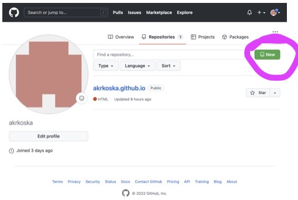
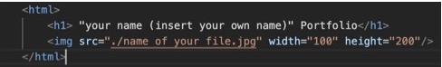

Are you new to GitHub, and you dont have much experience in the field of coding and computers? Then, you have found the right page. Let's get set up, shall we?
Open the link below
GithubSign up for a new account.
Click on the round icon in the upper left corner of your screen. It looks should look similar to this:

Click on "your repositories"
Click on the green "New" button:
As your repository name, type in username.github.io! Make sure you use your username, so that a website can be linked to your account.
Now go to your "Visual Studio Code or TextEdit (if you have Mac) and create an index.html file with the following content:
Create another file with a Portrait foto of yourself. It is best to use the .jpg format. Don't worry if the image is too big. In order to change the image size, you can adjust the width and height in your html file. You will find that right next to where your image file is inserted.
You have almost made it, stick with it. :) Now it is time to upload your existing files
Now press the green button saying "Commit changes".
Finally, to see the result of your work, call your Porfolio website by typing "username.github.io" Did you make it? Congratulations! :)